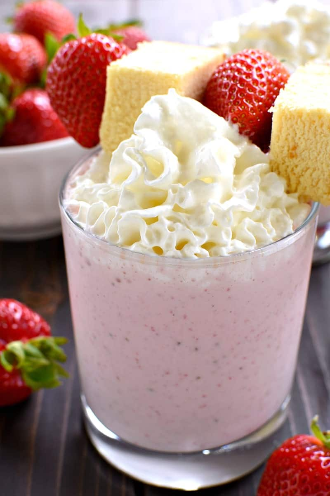

Strawberry Shortcake Milkshake

Total Time : 10 minutes
Ingredients
for 2 milkshakes
- 1 ½ cups strawberries, stems removed
- 1 cup vanilla wafer
- 2 fl oz brandy, or rum
- 2 cups strawberry ice cream
- whipped cream, for topping
Directions
- Combine the strawberries, vanilla wafers, rum, and strawberry ice cream in a blender. Blend until smooth.
- Top with whipped cream and strawberries.
- Enjoy!
Nutrition
- Calories 771
- Fat 39g
- Carbs 77g
- Fiber 1g
- Sugar 63g
- Protien 10g
Click here for more information.